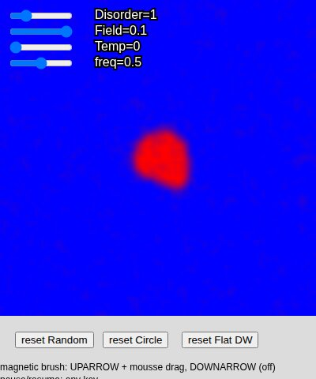

Demos
Simulaciones interactivas hechas con p5.js: algunas son material didáctico, otras ilustran temas en los que trabajo en investigación, y otras son simplemente por diversión. Hacé clic en cualquier tarjeta para correrla en el navegador.
Simulaciones de investigación

Depinning de una línea elástica desordenada
Una línea elástica empujada a través de un paisaje de fuerzas aleatorias, integrada con dinámica de Langevin sobreamortiguada. Ajustá la fuerza impulsora y la temperatura para pasar de anclada a en movimiento, y mirá la transición de depinning y la rugosidad que deja a su paso.

Modelo SIR espacial
Una epidemia propagándose en una red 2D: las poblaciones susceptible, infectada y removida difunden y reaccionan localmente. Ajustá el nivel de vacunación, arrastrá el mouse para sembrar nuevos focos de infección, y mirá el frente epidémico avanzar — o no.

Modelo φ⁴ con campo AC
Una teoría de campos con un potencial de doble pozo (φ⁴), desorden congelado, ruido térmico y un campo externo oscilante. Pintá dominios con el pincel magnético y mirá cómo se mueven sus paredes bajo el desorden, la temperatura y el campo AC.
Docencia

Modelo de Ising 2D
Simulación Monte Carlo Metropolis del modelo de Ising en una red cuadrada. Ajustá la temperatura y un campo externo, alterná entre acople ferro y antiferromagnético, y mirá formarse y derretirse los dominios. Hecho para la materia Mecánica Estadística del Instituto Balseiro.

Efecto Dzhanibekov — cuerpo rígido libre
Un cuerpo rígido en rotación libre, integrado a partir de las ecuaciones de Euler. Fijá las velocidades angulares iniciales y mirá cómo la inestabilidad del eje intermedio (el "efecto raqueta de tenis") da vuelta al cuerpo en pleno vuelo. Hecho para la materia Mecánica Analítica del Instituto Balseiro.

Bolita ensartada en un aro rotante
Un problema clásico de mecánica: una bolita restringida a un aro circular que gira alrededor de un eje vertical. Ajustá la velocidad angular del aro, la gravedad efectiva y la fricción para explorar la bifurcación hacia un equilibrio fuera del eje. Hecho para la materia Mecánica Analítica del Instituto Balseiro.

Péndulo doble
Dos péndulos dobles integrados con RK4 a partir de condiciones iniciales ajustables de forma independiente, para ver cómo divergen trayectorias cercanas — una mirada concreta al caos. Hecho para la materia Mecánica Analítica del Instituto Balseiro.